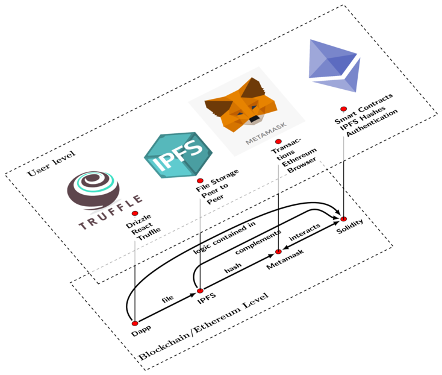
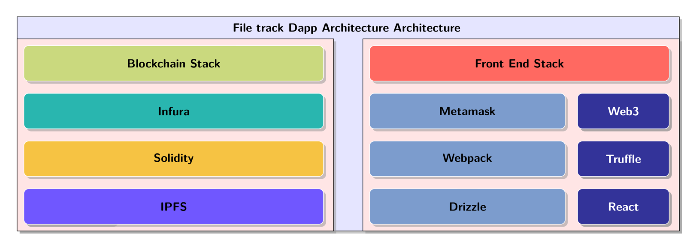

File-track Dapp
Simple Dapp that can track files uploaded to IPFS. See http://ipfsDapp.surge.sh

Upload and track IPFS files securely on the Ethereum Network.

Images are converted from pdf to png using imagemagick
convert -density 400 -resize 50% ipfs-dapp.pdf ipfs-dapp.png
Tasks
- [x] Truffle Test
- [x] User Registry Contract
- [x] Basic Front End
- [x] Design Auth Contract
- [x] Add front-end for authentication
- [x] Add component for viewing files for self, use bulma table.
- [x] Boilerplate for Front-end testing
- [x] Add component for viewing files for other users
- [ ] Add Contact Us Page, FAQ Page, etc ...
- [ ] Polish app, adding loading icons or render bulma icons, or font-awesome loading icons, add Contact Page.
| Filename | IPFS Hash | url |
|---|---|---|
| ENGR001 Report | QmSE4qrynVfCU1Vevhvaeav6RWtN5vFKSn3KaC3GuSKPvq | ENGR001 |
| ENGR002 Report | QmezncgKe3NEMyN9mmitT3BLwLE3adCNyNDUSJssgCqGXb | ENGR002 |
| ENGR003 Report | QmZb7crH2YYqwvq5d2pCjZxAovzqXkhWwnEE993UM4jikk | ENGR003 |
| ENGR446 Report | QmeQegoUZ3YMNpgUvinU424FtrMUYNNHgQafmaThrzG9nZ | ENGR446 |
Installation
-
Install Truffle and Ganache CLI globally. If you prefer, the graphical version of Ganache works as well!
javascript npm install -g truffle npm install -g ganache-cli -
Download the box. This also takes care of installing the necessary dependencies.
javascript truffle unbox drizzle -
Run the development blockchain, we recommend passing in a blocktime. Otherwise, its difficult to track things like loading indicators because Ganache will mine instantly.
javascript // 3 second blocktime. ganache-cli -b 3 -
Compile and migrate the smart contracts. Note inside the development console we don't preface commands with
truffle.javascript compile migrate -
Run the webpack server for front-end hot reloading (outside the development console). Smart contract changes must be manually recompiled and migrated.
javascript // Serves the front-end on http://localhost:3000 npm run start -
Truffle can run tests written in Solidity or JavaScript against your smart contracts. Note the command varies slightly if you're in or outside of the development console. ```javascript // If inside the development console. test
// If outside the development console.. truffle test ```
-
Jest is included for testing React components. Compile your contracts before running Jest, or you may receive some file not found errors.
javascript // Run Jest outside of the development console for front-end component tests. npm run test -
To build the application for production, use the build command. A production build will be in the build_webpack folder.
javascript npm run build
Other doxity options
"interaction": {
"network": "2",
"providerUrl": "https://morden.infura.io/sign_up_to_get_a_hash"
},
// option to whitelist various data
"whitelist": {
// the keyname `all` will be used for whitelist defaults
"all": {
"abi": true,
"methods": true,
"bytecode": false, // bytecode is false or undefined, it won't be shown
"source": false // source is false or undefined, won't be shown
},
"DigixMath": {
"source": true // source code uniquely shown for this contract, bytecode still hidden
}
}